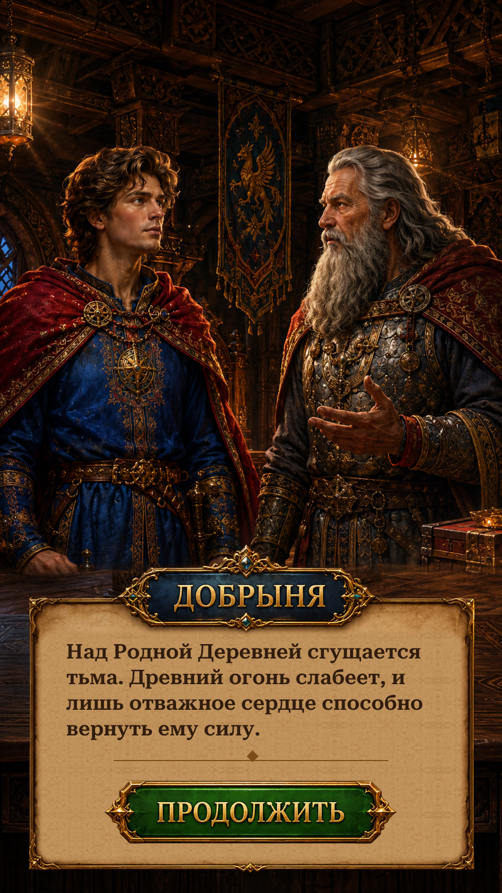

Restored original Russian Continue lettering and the Dobrynya nameplate. Other speakers and English labels remain live; the original story progression is preserved.
Views below are actual Unity Play Mode captures with isolated saves and simulated phone sizes/safe areas. The dialogue composition intentionally has no resource header, matching the original. Cancelled button presses do not advance the story. Russian source name lettering is conditional on the actual speaker; English labels and all dialogue content remain localizable.

Changes and validation · Remaining reference differences · Verification results · Extracted assets